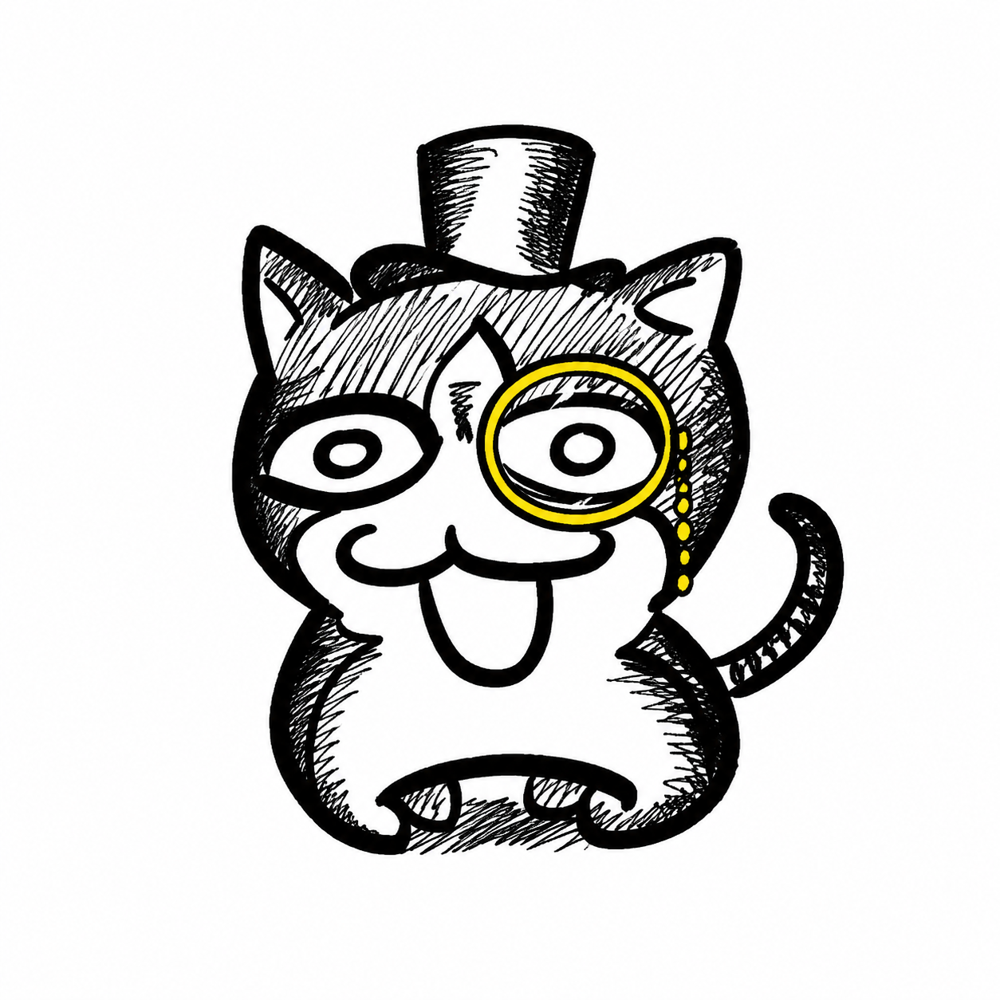

INDEPENDENT DEVELOPER / CURIOUS BY DEFAULT
Built out
of curiosity.
Console homebrew. Game tools. Small experiments that turn “what if” into something you can use.
Explore the work ↓
01 / SELECTED WORK
From idea
to repository.
A selection of my public projects.
Built to explore, solve, and share.
orbisRPC
Your PS4. On Discord.
Discord Rich Presence straight from a jailbroken PS4. Game, cover art, and play timer. No PC bridge at runtime.
randar-189
Read between the blocks.
A Minecraft 1.8.9 mod exploring world RNG, structure regions, and seed recovery through block drops.
goldhen-payload-template
A better starting point.
A GoldHEN payload starter with the build, loading, and debugging notes learned along the way.
nanodns-pinger
Less guessing. More playing.
A Discord bot that diagnoses broken PS4 Rich Presence and points members toward a fix.
crypto-bot
Real data. Paper money.
Paper trading with Hermes, Ollama, and code-enforced risk checks. No broker connection or real orders.
02 / BEHIND THE WORK
I like finding out
how things work.
My projects move between PlayStation homebrew, Minecraft tooling, Discord integrations, and automation. The common thread: taking something apart, understanding it, and making something useful from what I learn.
“Blessed is the one whose own faults keep him busy from the faults of others.”
ALSO IN THE WORKSHOP / FORKS